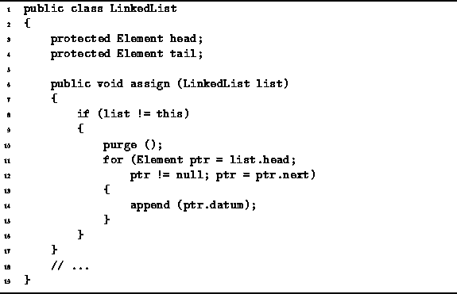

Data Structures and Algorithms
with Object-Oriented Design Patterns in Java
Data Structures and Algorithms
with Object-Oriented Design Patterns in Java
The code for the assign method
of the LinkedList class is given in Program  .
The assign method is used
to assign the elements of one list to another.
It does this by discarding the current list elements
and then building a copy of the given linked list.
.
The assign method is used
to assign the elements of one list to another.
It does this by discarding the current list elements
and then building a copy of the given linked list.

Program: LinkedList class constructor and assign methods.
The assign method begins by calling purge to make sure that the list to which new contents are being assigned is empty. Then, it traverses the list passed to it one-by-one calling the append method to append the items to the list begin constructed.
In Section the running time for the append
method was determined to be O(1).
If the resulting list has n elements,
the append method will be called n times.
Therefore, the running time of the assign method is O(n).
 Copyright © 1998 by Bruno R. Preiss, P.Eng. All rights reserved.
Copyright © 1998 by Bruno R. Preiss, P.Eng. All rights reserved.